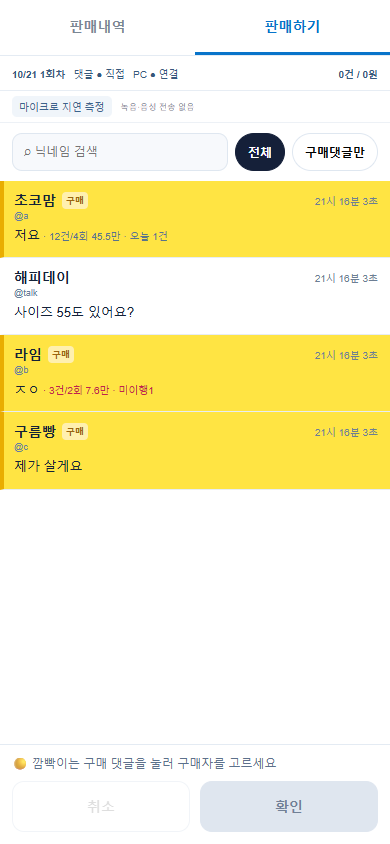
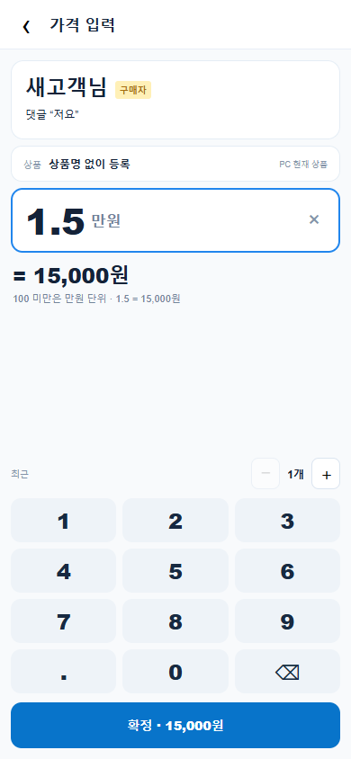
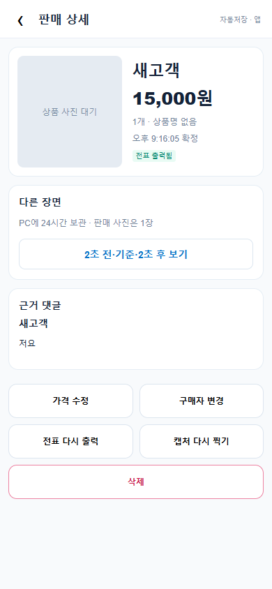

01 · 구매 댓글 강조


전체·구매 댓글 필터, 검색, 고객 통계, 구매자 선택.
첨부 설계서 구현 + 구매 댓글 행 전체 깜빡임 추가 요청 검증 결과
구매 의사가 있는 댓글은 행 전체가 노란색으로 깜빡입니다. 깜빡이는 댓글 하나를 누르면 그때까지의 구매 알림이 모두 꺼지고, 선택한 행에만 파란 표시가 남습니다. 이후 새로 도착한 구매 댓글은 다시 깜빡입니다. 일반 댓글이나 이미 확인한 댓글을 누르면 새 구매 알림을 지우지 않습니다.
기기의 동작 줄이기 설정에서는 눈에 띄는 노란색 고정 강조를 사용합니다. 구매 의사는 기존 규칙으로 판별하며 STT·AI를 호출하지 않습니다.
예: 폰 확정 + 준비 4초 + 방송 지연 5초 = 확정 9초 뒤의 방송 화면. 폰·PC 시각을 보정하고, 최근 30초 프레임에서 목표 시각에 가까운 장면을 찾습니다. 해당 장면이 없으면 캡처 없음으로 남깁니다.
실제 운영 폰 컴포넌트를 Chromium 390px 화면에서 촬영했습니다. 고객·댓글·판매 저장은 격리된 가상 데이터입니다. 상품 사진 대기는 실제 방송을 연결하지 않았기 때문입니다.

전체·구매 댓글 필터, 검색, 고객 통계, 구매자 선택.

1.5 = 15,000원. 수량·최근 가격·실제 저장 금액을 확인합니다.
건별·구매자별 합계, 보내는 중, 전표·캡처 상태.

가격·구매자 정정, 취소, 재출력, 재촬영, 전후 장면 선택.
| 영역 | 실행한 검증 | 결과 |
|---|---|---|
| 판매·저장 | PGlite에서 실제 SQL 함수 실행. 원자적 저장, 같은 작업 재전송, 회차 종료, 추가 판매 확인, 다른 작업공간 차단. | 통과 |
| 전표 | 서버 작업 임대·수정 버전 검사·중복 접수 차단. 결과 불명 시 자동 반복 방지. 느린 프린터와 캡처 작업 독립 실행. | 통과 |
| 캡처 | 가상 시계로 확정 시각·방송 지연·시차 보정. 지난 장면 없음 처리, 요청 식별자 경합 차단, 단일 사진 교체. | 통과 |
| 연결·복구 | 실제 RTCPeerConnection 연결. 연결 중단·처음부터 WebRTC 불가 시 가상 Broadcast 예비 연결, 중복 제거, PC 변경 복구. | 통과 |
| 폰 저장함 | 확정 더블탭, 서버 저장 후 응답 유실, 새로고침 후 같은 작업 번호 재전송으로 판매 1건 유지. | 통과 |
| 구매 강조 | 한 번 터치로 기존 깜빡임 전체 해제·선택 1개, 새 구매만 재강조, 일반 댓글 터치 시 알림 유지. | 통과 |
| 통계·권한 | 고유 계정·닉네임 변경·동명이인·유사 이름·취소 반영. 관리자 서버 권한과 비공개 채널 SQL 규칙. | 통과 |
| 기존 음성 방식 | 최신 main의 음성 판매 수정 2건을 포함해 전체 1,364개 테스트. 댓글터치 모드의 STT·AI·전체 댓글 DB 전송 차단. | 통과 |
가상 고객 1,000명·판매 10,000건을 한 번 색인한 뒤 500,000회 조회했습니다. 결과 합계도 검증했습니다.
측정 예: 색인 생성 66.70ms, 전체 조회 94.83ms, 평균 0.00019ms/조회.
해당 PC의 합성 Node 벤치마크이며 휴대폰 응답 속도·실제 방송 지연을 뜻하지 않습니다. 원시 결과
운영 Supabase SQL·sales-api·웹 배포는 실행하지 않았습니다. Deno는 실행 환경이 없어 서버 번들 구문 검사까지만 수행했습니다. 실물 프린터, 실제 방송의 상품 장면, Android 문자 앱 공존, iPhone Safari, 와이파이·LTE, 실제 마이크 지연은 배포 후 시험 회차에서 확인해야 합니다.
병합·배포는 별도 지시 후 진행합니다. 기존 댓글 도우미 수정은 없습니다.